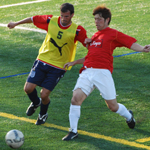

Some like it hot - but not once they hit forty!
 |
|
Eye on the ball! Rod Cramblitt prepares to head home AOB's first goal in TML 7!
|
OiFuto dirty, Saturday 29th August
Summer was not going to fade away quietly - it was well over 30 degrees in the mad-dog mid-afternoon sun and certainly hot enough to fry eggs on the scorched scalps of the more follicly-challenged veterans as the Albion Old Boys stepped onto the oven-baked clay of Oifuto 1 to begin their 3rd TML campaign against the very useful Jetro side that just pipped us for third place in last season's table. Ninety minutes later the sunburnt seniors crawled off the oven-baked clay of Oifuto 1 to begin a few hours of serious alco-rehydration, having scored all five goals in an impressive 4-1 victory. more ...
TC
Hibs Draw First Blood in Celtic Battle
Fukuda Denshi, Saturday 29th August
The ground at Fukuda Denshi is known to many area historians as the site of the Fukudic Uprising of 1272, when the local daimyo and his elite spear-throwing corps defeated a much larger invading force from what is now central Chiba to lay final claim to their homeland. more ...
JA
Slide & Slice is Key to Clash Victory
Hodogaya Grass, Sunday 30th August
The Clash held on to win 3-2 against Guarana Republic at Hodogaya after being 3-0 up at half-time.
On a wet and windy Yokohama morning, the teams kicked off their 2009/10 campaigns. The superb grass pitch, slick from the rain, made for a surprisingly high quality encounter full of passing moves. more ...
RK
Pink Panthers Saved from Blushes
YC&AC, Saturday 29th August
IFG Panthers had a dramatic start to their opening TML division 2 match. Boasting a brand new pink jersey they started against Barbarians with slick football to justify their choice of outfit! Barbarians were strong and determined from the start but the first 20 minutes were pretty much played in their half as Panthers dominated possession and territory. more ...
RB
Beaten by the Heat : Sun too strong for Pumas.
 |
|
IFG PUMAS get things underway against Sun United in TML's 3rd Division.
|
OiFuto dirty, Saturday 29th August
The honour of kicking off the new TML season went to international outfit IFG Pumas taking on Div 3 stalwarts, the Japanese Francophiles, Saint-United, more ...
KG
It All Kicks Off at Oi Futo
OiFuto, Saturday 29th August
The 7th season of TML got underway at Oi Futo on Saturday lunchtime under a blazing sun and temperatures in the mid 30's. It was Division 3 newcomers IFG Pumas led by Nick Webb (pictured) who got the latest season underway, against Sun United FC. Unfortuantely for Pumas though, it didn't quite go to plan as they were defeated 3-1. A total of 7 matches were played on the opening weekend, spread out between locations in Tokyo, Chiba, Yokohama and Kawasaki. This season could see teams having to play further afield due to the lack of availability on more local pitches and the closing of Misato in late October (one of our main grounds last season).
Facilities in and around Tokyo are few & far between, with thousands of people vying for those that are available, so any help in securing grounds would be most appreciated and rewarded (financially) by the league. Please help us help you!.
FJ
YCAC Take Inaugural Magnificent 7's
 |
|
Joe Takeda picks up YCAC's 2nd silverware of the year, the Magnificent 7's Cup.
|
YCAC, Sunday, August 23rd
Just 1 goal separated the top 2 teams in this Summers inaugural Magnificent 7's summer league, with YC&AC taking the silverware at the expense of BFC. YC&AC had gone into the final game of the tournament leading the group by a 2 goal better difference than BFC but having to face 3rd placed ((by -4 GD) Hibs. BFC however had to play mid table Shane FC, so there was everything to play for. On the night, all 10 teams showed up with full squads, with the exception of Hibs who just fielded 6 players.Still they held YCAC at 0-0 until 5 minutes from time, while BFC took a storming 6-1 lead that looked to have won the title for them. But once Hibs conceded a goal, the flood-gates opened and YCAC stormed to a 4-0 win that was enough to just pip BFC to the post as the latter finished 7-2 winners. more ...
This proved to be a very popular league for all inviolved, so Footy Japan are looking to start a mid-week Magnificent 7's league at Oi Futo Astro from October.
FJ
Hot Stuff in Summer Sevens
|  |
|
BEFC's Ferdy challenges for the ball in the Bowl final v El Diego
|
OiFuto 2, Sunday, August 16th
On one of the hottest days of the year, 20 teams fought it our on the astroturf at OiFuto for the honour of becoming champions of Footy Japan's Summer 7's.
None of the previous 7's winners could even make it through to the final as the Yokohama Soccer & Culture Club beat FC Bon Bon on Penalties to become new champions. They had put Alex Sahara & his NSP boys, the New Years 7's champs, out 2-0 in the semifinals and made quick work of YC&AC before that.
In the Bowl final, TML's El Diego beat the British Embassy 2-0 after the latter had seen off Charity 7's Champs FJFC in the semis more ...
FJ
|